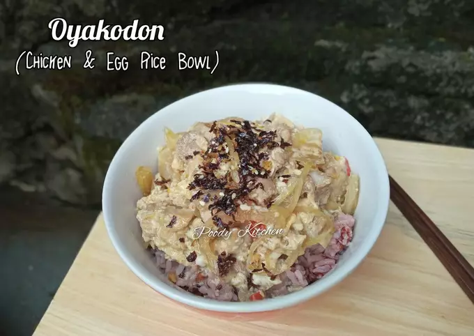
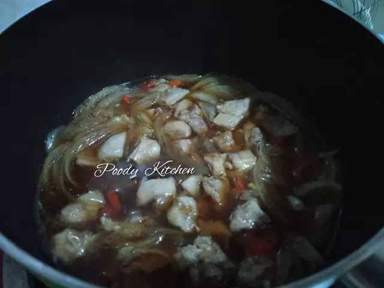
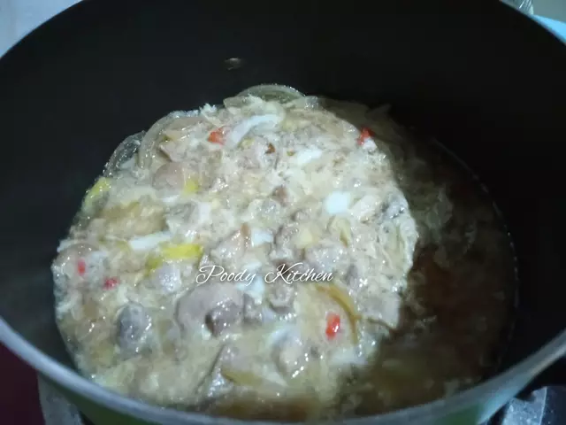
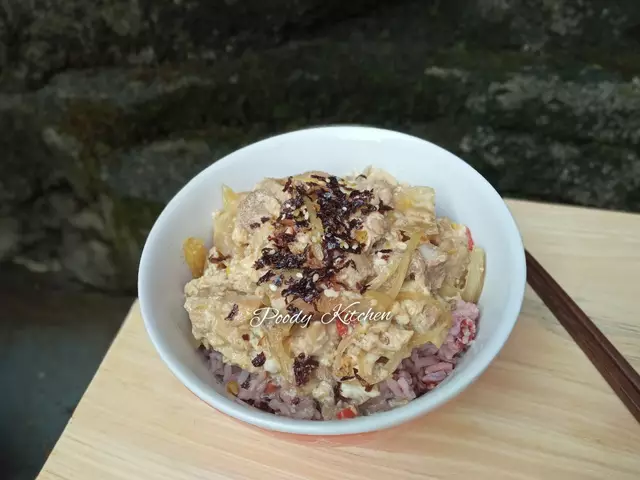

Bahan :
Bumbu, aduk rata dalam mangkok :
Langkah - langkah :
1. Siapkan bahan. Potong kecil ayam. Aduk rata bumbu dalam mangkok, jangan lupa tes rasa ya.
2. Masukkan bawang bombay, cabe, ayam & campuran bumbu dalam panci. Masak dengan api kecil sambil ditutup hingga ayam berubah warna & matang.
3. Kemudian tuang 3/4 bagian dari kocokan telur, aduk asal saja hingga telur matang. Lalu tuang sisa telur, matikan api. Tutup panci, diamkan sebentar hingga telur setengah matang atau matang.
4. Penyelesaian : Taruh nasi dalam mangkok, lalu tuang oyakodon diatasnya, taburi dengan nori flake & wijen sangrai jika suka. Sajikan hangat, yummy...